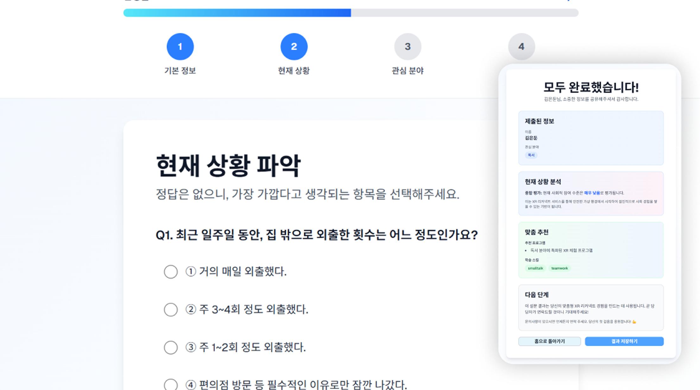
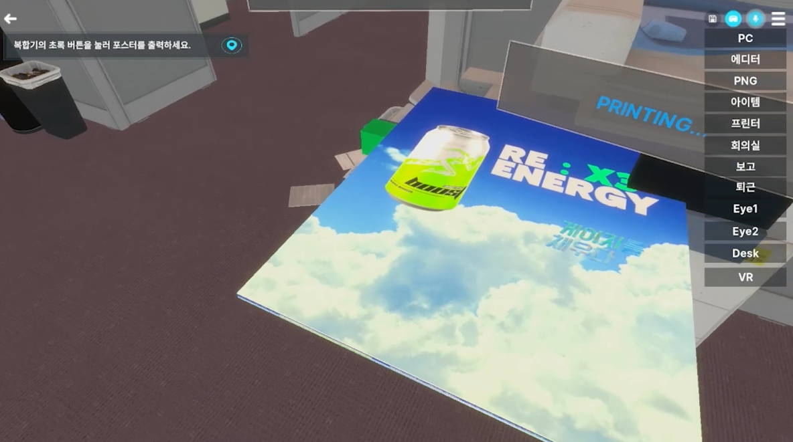
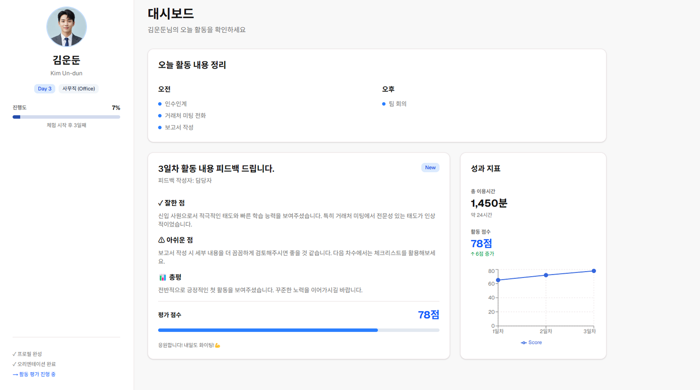
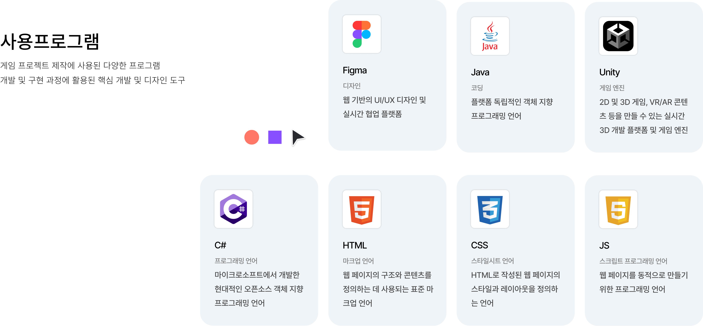
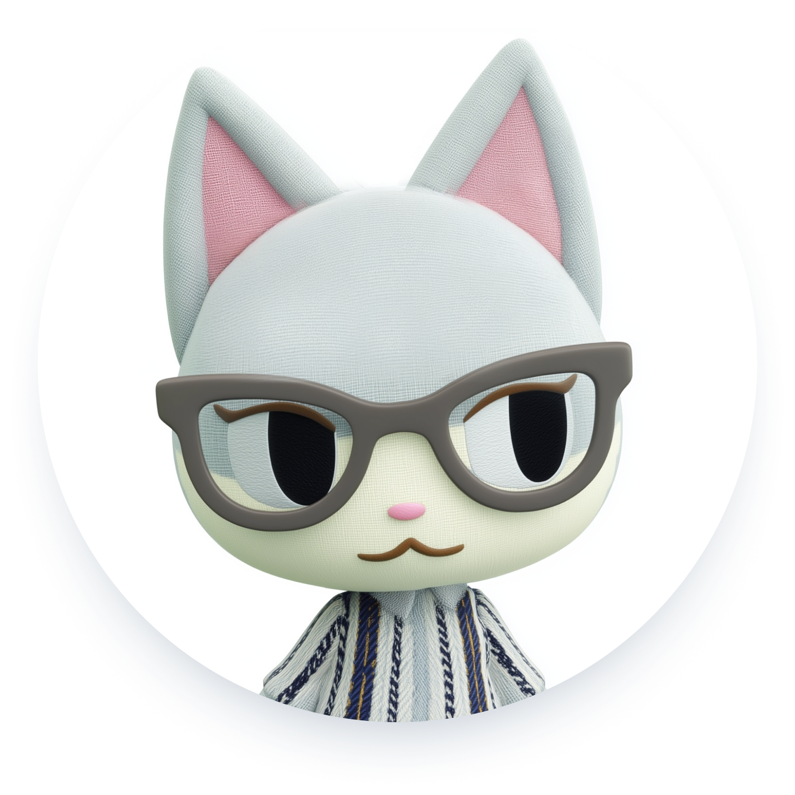

Interest
Driven
Placement
흥미 기반 부서 배치
획일적인 교육이 아닌, 사전 설문을 통해 디자인·기획 등 사용자가 선호하는 분야의 부서를 결정하여 진입 장벽을 최소화 합니다.
안전한 가상 공간에서 사회 적응과
실전 상황을 단계적으로 경험하며, 사회적 역량을 익히고
현실 사회에 안정적으로 적응할 수 있도록 돕는 서비스입니다.
이는 세상으로 나아가는 가장 안전한 징검다리 역할이 되어줍니다.







Our Vision
“우리의 비전”
우리는 XR 기반 사회 적응 훈련을 통해
은둔 청년이 안전한 가상 공간에서 소통과 협업을 경험하고,
현실 사회로 한 걸음씩 나아갈 수 있도록 돕고자 합니다.
사회적 고립 문제 해결에 기여하는 실질적인 사회 복귀 서비스를 만드는 것이 우리의 비전입니다.


박희원
팀장/기획
프로젝트 총괄 및 기획 담당
김가영
영상/디자인
콘텐츠 및 UI/UX 디자인 담당
박소희
영상/디자인
콘텐츠 및 UI/UX 디자인 담당
신현아
개발
XR 플랫폼 개발 및 웹사이트 퍼블리쉬
최정후
개발
XR 플랫폼 개발 및 유지보수 담당